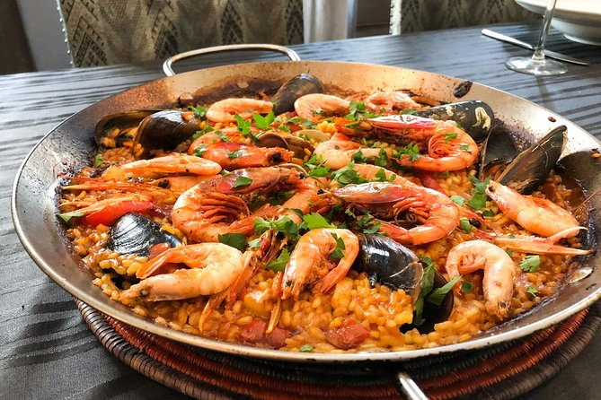

Paella Recipe

Easiest way to learn how to cook a paella
We will be using simple ingredients that you may find at your closest grocery store
Ingredients
- Produce: onion, bell pepper, garlic, tomatoes, parsley, frozen peas.
- Spices: bay leaf, paprika, saffron, salt and pepper.
- Saffron: this may be the most important ingredient, so it's best to buy high quality.
- Seafood: jumbo shrimp, mussels, calamari
- Olive Oil: Spanish olive oil , or any good quality olive oil.
- White wine
- Spanish Rice (Also known as Arroz Bomba)
Steps
- SauteAdd olive oil to a skillet over medium heat. Add onion, bell peppers and garlic and sauté until onion is translucent.
Add chopped tomato, bay leaf, paprika, saffron, salt and pepper. Stir and cook for 5 minutes.
- Add white wine. Cook for 10 minutes.
- Add rice.Add chopped parsley and cook for 1 minute.
- Add broth.Pour the broth slowly all around the pan and jiggle the pan to get the rice into an even layer.
- Cook uncovered.Cook paella uncovered for 15-18 minutes.
- Cover and let rest.for 10 minutes.
- Serve.